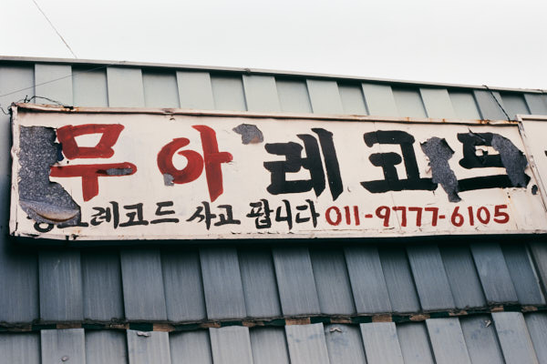

Photographic practice · 2005—2026
반복되는 일상에서
관계의 구조를 발견합니다.
사진을 매개로 삶의 흔적과 사회문화적 가치가 교차하는 지점을 기록합니다. 개별적인 장면에서 반복되는 형태를 찾고, 그 사이의 거리와 공명을 바라봅니다.
작업 보기Selected works
작업


Practice
세 개의 흐름,
하나의 태도
작업은 문자와 장소의 표면을 수집하는 일, 환원되지 않는 존재를 감각하는 일, 그리고 사건 속에서 반복되는 유형을 발견하는 일로 이어집니다.
서로 다른 시기에 시작된 세 흐름은 독립된 분류라기보다 계속 교차하고 확장되는 작업의 좌표입니다.
작가 이력 보기Texts